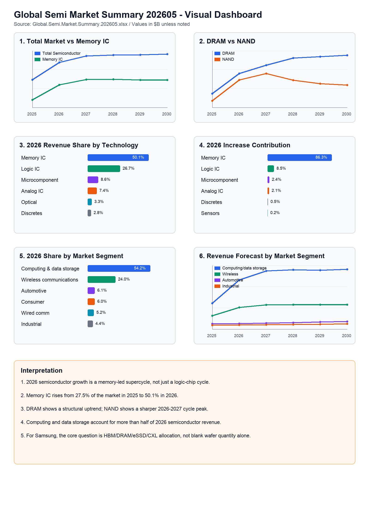

김임환의 인사이트 · Memory Market
2026년 반도체 시장, 메모리가 판을 다시 짠다
Omdia의 Global Semi Market Summary 202605 데이터를 보면, 2026년 반도체 슈퍼사이클은 단순한 AI 논리칩 사이클이 아니다. 증가분의 대부분은 메모리에서 나온다.

핵심 판단
2026년 전세계 반도체 매출은 2025년 8,308억 달러에서 1.35조 달러로 증가한다. 성장률은 62.7%다. 그러나 이 숫자를 단순히 "AI 칩 시장이 폭발했다"로 읽으면 핵심을 놓친다. Omdia 데이터 기준, 2026년 반도체 매출 증가분의 약 86.3%는 Memory IC에서 나온다.
2026년 시장을 움직이는 것은 Memory IC다
| 구분 | 2025 | 2026 | 2030 | 2026 YoY | 2025-2030 CAGR |
|---|---|---|---|---|---|
| Total semiconductor | $830.8B | $1,351.3B | $1,602.4B | 62.7% | 14.0% |
| Memory IC | $228.4B | $677.5B | $819.4B | 196.7% | 29.1% |
| DRAM | $150.5B | $371.5B | $569.9B | 146.8% | 30.5% |
| NAND | $72.9B | $300.0B | $243.6B | 311.3% | 27.3% |
| Logic IC | $316.4B | $360.9B | $403.4B | 14.1% | 5.0% |
2025년에는 Logic IC가 가장 큰 시장이었다. 그러나 2026년에는 Memory IC가 전체 반도체 시장의 50.1%를 차지한다. 이 변화는 매우 크다. AI 서버가 단순히 GPU와 ASIC 수요만 키우는 것이 아니라, HBM과 서버 DRAM, 고성능 SSD의 가격과 믹스를 동시에 끌어올리고 있다는 의미다.
DRAM과 NAND는 같은 메모리지만 성격이 다르다
DRAM은 2025년 1,505억 달러에서 2030년 5,699억 달러까지 계속 커지는 구조다. HBM, DDR5, 서버 DRAM, AI inference memory intensity가 이 흐름을 만든다. 반면 NAND는 2026~2027년에 급등한 뒤 2030년에는 2026년보다 낮아지는 구조로 제시된다. 즉 DRAM은 구조적 성장 축이고, NAND는 가격 회복과 고성능 eSSD 사이클의 성격이 더 강하다.
Computing & Data Storage가 시장의 절반을 넘는다
| 시장 세그먼트 | 2025 | 2026 | 2030 | 2026 YoY | 2026 비중 |
|---|---|---|---|---|---|
| Computing & data storage | $385.8B | $732.7B | $892.9B | 89.9% | 54.2% |
| Wireless communications | $198.4B | $324.6B | $363.5B | 63.6% | 24.0% |
| Automotive electronics | $76.5B | $82.0B | $110.6B | 7.1% | 6.1% |
| Consumer electronics | $50.0B | $81.3B | $77.6B | 62.5% | 6.0% |
2026년 computing & data storage 세그먼트는 전체 반도체 매출의 54.2%를 차지한다. 전체 증가분 기준으로도 66.6%가 이 세그먼트에서 나온다. 이 숫자는 데이터센터와 AI 서버가 반도체 시장의 중심축이 되었음을 보여준다.
웨이퍼 수급 논의와 연결
앞서 검토한 Silicon Demand Forecast Tool 자료에서는 2026년 300mm wafer output 증가율이 demand-driven silicon 증가율보다 높게 나타났다. 이번 매출 자료는 이 해석을 보강한다. 2026년 매출 급증은 blank wafer 장수가 폭증해서가 아니라, 메모리 ASP와 제품 믹스가 급격히 좋아지기 때문에 발생한다.
따라서 "웨이퍼가 부족한가"라는 질문에 대한 답은 섬세해야 한다. 일반적인 blank wafer 총량은 심각하게 부족하다고 보기 어렵다. 그러나 HBM용 advanced DRAM, TSV, bonding, test, CXL/eSSD, high-grade prime wafer qualification은 별도의 병목으로 봐야 한다.
결론
2026년 반도체 시장은 메모리가 다시 주도권을 잡는 해다. 하지만 이것은 과거 PC DRAM 사이클의 반복이 아니다. AI 서버가 만든 HBM 중심 수요가 DDR5, eSSD, NAND, CXL memory tier까지 확장되는 새로운 형태의 메모리 사이클이다.